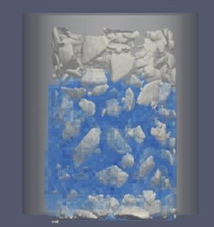

Toggle navigation
Murilo Henrique Moreira
M H Moreira
Webpages
Curriculum Vitae
Research
Projects
Attention!
🚧 This page is under construction 🚧
Research
The papers that I have taken part of:

Paper 1
Year
Brief Description